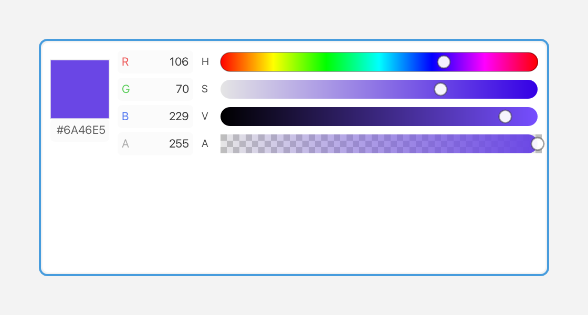

ColorPicker
A ColorPicker lets you choose a Color through hue/saturation/value bars and editable RGBA/hex fields.

HSV bars, RGBA fields and a preview swatch.
What it's for
A Color has four parts: red, green, blue, and alpha. Red, green, and blue mix to make the color; alpha is its opacity, where 0 is fully transparent and 255 is fully opaque. Fluffy stores each part as a byte from 0 to 255.
A color picker lets the user choose all four parts interactively. It shows four bars — hue, saturation, value, and alpha — along with editable R/G/B/A decimal fields and a Hex field. The bars and the fields stay in sync: change one and the others update.
The three color bars mean:
- Hue — the color family, such as red, yellow, green, or blue.
- Saturation — how strong the color is, from gray to vivid.
- Value — how bright the color is, from black to full brightness.
Use a color picker when the user should choose a color visually rather than type exact numbers.
A first example
#include <cstdio>
#include <fluffy/fluffy.hpp>
int main() {
fluffy::Window win = fluffy::Window::open("ColorPicker", 640, 400);
if (!win) return 1;
auto& cp = win.add<fluffy::ColorPicker>(
fluffy::Rect{40, 40, 280, 240},
fluffy::Color::fromHex(0xFF8080FF));
cp.setColor(fluffy::Color::fromHex(0xFF00FF00));
fluffy::Color c = cp.color();
win.run();
}
Window::open creates the window, and if (!win) stops early if it could not be opened. win.add<fluffy::ColorPicker>() creates the picker inside the window and returns a reference to it. The auto& matters: cp is that reference, so you work with the real picker rather than a copy.
The first constructor argument is a Rect that sets the position and size. The second is the initial Color.
Color::fromHex() takes a number written as 0xAARRGGBB: alpha first, then red, green, and blue. For example, 0xFF8080FF is an opaque pink, and 0xFF00FF00 is an opaque green. setColor() replaces the current color, and color() reads it back.
Common tasks
Edit the color
Click a field to edit it. Enter commits the value and Esc cancels. You can also drag the bars with the mouse. The widget keeps the bars, the fields, and the displayed color synchronized as you work.
Disable or focus the picker
cp.setEnabled(false);
bool f = cp.isFocused();
setEnabled(false) greys out the picker and makes it ignore input. The picker is focusable, and isFocused() reports the focus state. When it is focused it shows a focus ring.
React to changes
A callback is a function you give to a widget so it can call you back when something happens. onChange is the picker's callback for its color changing:
cp.setOnChange([](fluffy::Color c) {
std::printf("#%02X%02X%02X%02X\n", c.r, c.g, c.b, c.a);
});
The callback runs when a bar is dragged or when the user successfully presses Enter in a text field. It receives the new Color. Its r, g, b, and a members are bytes, so you can print them or build your own output from them.
Declare it in YAML
ColorPicker:
color: "#FF00FF80"
x: 40
y: 40
width: 280
height: 240
color is the initial color as a string. With eight digits the order is #AARRGGBB; with six digits, #RRGGBB, the color is opaque. x, y, width, and height set the geometry.
Quick reference
Properties
| Property | Type | Description |
|---|---|---|
color |
Color |
Current RGBA value. |
Events
| Event | Signature | When |
|---|---|---|
onChange |
void(Color c) |
Bar drag or successful Enter in a text field. |
See also
Colorin Geom